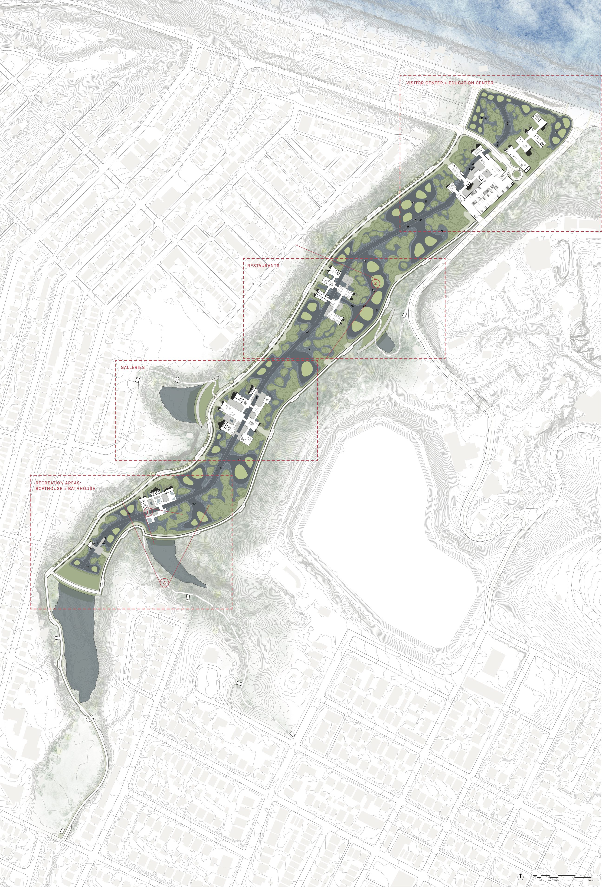

INFRAstructure Studio
Carnegie Mellon University
Fourth Year | Fall 2018
Advanced Synthesis Option Studio 48-400: High_Rise ”Untitled” 2018, New York, NY
Studio Professor and Coordinator: Gerard Damiani
Project Introduction
The introduction to the studio was initially written by Professor Christine Mondor, parts of which are rewritten or paraphrased here.
"INFRAstructure studio focuses about the forces that underly urban form. The studio will examine the dynamics of resource flow, whether it be water, mobility, food, or energy. The projects will examine the associated form logics to these resource flows and how those relationships change at different scales.
The studio is focused on a scalar understanding of infrastructure, from the micro, meso, and macro sales and query the possibilities for occupancy. The design problems shift scales, allowing one to understand that each scale is an opportunity for design. Through this, one will learn to understand resource flows in placemaking, in system functioning, and how designs and design processes can activate human experience."
- OBJECTIVE :: Technical Knowledge
- OBJECTIVE :: Procedural Knowledge
- OBJECTIVE :: Spatial & Experiential Knowledge
INFRAstructure Studio Projects
- 1. Form Logics of the Familiar
- 2. Critical [of] Infrastructure
- 3a. Semester Project: Getting into Heth’s Run
- 3b. Semester Project: Heth’s Agriculture + Sculpture Park
This documentation covers Projects 1, 3a, and 3b.
1. FORM LOGICS OF THE FAMILIAR
The first exercise of the INFRAstructure studio was to analyze and query a familiar landscape, and particularly how water has affected its form logics. Here, we draw upon work by Ray and Charles Eames’, The Powers of Ten, to examine the macro scale, meso scale and micro scale and find the underlying rule sets that influenced their form.
Geographic regions are defined by surface and subsurface geology, water, landscape features, and biotic communities. Each layer is related in some way to the other, and no settlement can exist without some connection to water.
Because this exercise mainly explores the relationship of regional identity to its water form logics, I chose my hometown: Warsaw, Indiana, for its abundance of glacier-formed natural lakes.
MACRO FORM LOGIC
On the macro scale, the regional pattern of water is investigated in three different techniques.
- SEQUENCE the relationship of the parts over time or other conditions of flux (flooding, erosion, etc.)
- OPERATIONS the operational diagrams describing the relationship of the parts and/or causalities
- TAXONOMY component parts relating to water (e.g., taxonomy of water bodies)
1. Pre-Development
2. Land Ordinance of 1785
3. 1866: Adjustment of Township Lines
4. 1879-1887: Addition of a North-South Railroad
5. 1887: Beyer Brothers Dairy Farm
6. 1887-1894 Spring Fountain Park
7. 1894: Winona Assembly and Summer School Association
8. 1905-1916: The religious and recreational "Golden Age" of Winona

9. 1920s-Present: U.S. Route 30
MICRO FORM LOGIC
The relationship between the human experience and water is analyzed in the micro scale, in similar techniques to the macro scale.
- SEQUENCE describe changes over time, related to water, activity, enclosure, etc.
- TAXONOMY the elements that define place / the component parts relating to water
3a. Getting into Heth's Park
Duration: 2.5 weeks
The first part of the semester studio project was to design an architectural element of infrastructure that focuses on experience of the landscape; stairs. This exercise was to investigate the micro scale, and to start designing at the more familiar small scale place and experience. The site is located in the Heth’s Run watershed, as an entry point to Project 3b’s site.
The stair connects the Morningside neighborhood to Heth’s Run, beginning at Natoli Field and ending on the valley floor. Similarly to how traditional ‘Pittsburgh’ stairs are built for function, the design of these stairs perpendicularly intersect the curve of the hillside to provide a more direct path to the valley floor. The stairs vary the experience of the visitor, by both cutting into the hillside and hovering above the landscape.
In addition to experience, the stairs become an opportunity to collect, contain, and deliver water from Natoli field and surrounding Morningside area, to the future site of Project 3b. With this in mind, I developed a water trough delivery and containment system using a series of rain gardens and waterfalls. This allowed for another layer of human interaction, which integrated seamlessly into the experience of a visitor traveling through the stairs into the site or into the neighborhood.
3b. Heth’s Agriculture + Sculpture Park
Project 3b was designed and created in collaboration with Zhuoying Lin.
The majority of the INFRAstructure studio was spent designing at the meso-macro scales; the intent being to organize the Heth’s Run valley into an arts and sculpture park that would also serve as a critical piece of Pittsburgh’s water infrastructure. In addition to the required program, the final result must also be able to contain at least half of the capacity of Reservoir 1, in the event of potential reservoir contamination.
Design Approach
When first approaching the prompt, we first looked at the site and its issues that we wanted to investigate. Many of the valley’s difficulties were due to its topographical nature, as the hillside often ranged from 40’-60’ in vertical change. This drastic hillside also designated the valley as a water collection area.
Specifically when looking at rainfall and water collection, we decided to designate four areas in Heth’s Run as potential water catchment areas, due to its topography, potential for high-volume water movement, and location.
After our analysis, we wanted to focus on the management and collection of stormwater to prevent flooding, and the lack of a ‘destination’ in the valley and surrounding neighborhood area. In order to achieve this, our process of organizing the site evolved from basic forms and program areas, to expanding the program to include recreational and agricultural activities. Our goal for the park is to interweave a visitor’s experience within Heth’s Run with water, recreation, and self-sustaining ecology.
INITIAL PROGRAM REQUIREMENTS
- Visitor’s Center Admissions, cafe, giftshop, restrooms, etc Parking for 250 cars
- Service building(s) for equipment
- Indoor/Outdoor gallery areas
- 57 million gallons of water (Half of Reservoir 1)
ADDED PROGRAM
- Bathhouse
- Boathouses + Boating Activities Restaurants
- Agriculture Paddies Aquaculture Cultivation areas Education Center
Our Design
As stated previously, the program expanded to allow for more recreational activities. This includes boathouses and boating opportunities, a bathhouse, restaurants, and an education center. As for organizing water infrastructure, the project uses four containment dams, an archipelagos island system, and a main directional channel to serves as water management, outdoor art spaces, and occupiable areas. These work among floating agricultural paddies, to help create a relationship between the neighborhood and recreational program within the site. Aquaculture also becomes another recreational and agricultural aspect of Heth’s Run, as the landscape and paddies can provide a self-sustaining ecosystem for this practice.
The buildings that contain the conditioned program spaces are placed throughout the site to serve as secondary lock and dam systems, which resolve the grade change from the south to the north end. The buildings themselves are simple rows, and rise out of the landscape to create green roofs, occupiable ‘in-between’ spaces, and interesting interior and exterior experiences.
Vehicles enter on the north end, and are directed to drop off passengers or park in the parking garage. Service vehicle spaces and handicap accessible spaces are available near the buildings along the access roads on the perimeter of the site.
Process
Initial Scheme Sketch
October 9, 2019
October 14, 2019
October 28, 2019
November 11, 2019
November 18, 2019
Seasonal Sections
Given the often drastic change in seasons and precipitation levels, we designed the project to respond to various levels of water. In all seasons, the main channel would stay filled, as well as areas that accommodate aquaculture. However, in the flood season, the water levels likely will rise, which changes the occupancy of the landscape.
Water Flow Sequence
The flow of water often starts at the neighborhood level, above the valley. Water collected in these areas travel down the hillside into the large containment dams, through a controlled spillway, under the permeable roads, and out into the archipelagos island and channel system.
Water Occupancy
The relationship between landscape and water allowed for a variety of wet and dry conditions, particularly as flooding occurs and levels change. This was also designed to allow for diversity in experiences, which can be applied throughout the site.
Urban Site Plan
Visitor and Education Center
The visitor center is accompanied by an education center to the north of the drop-off zone. The education center takes advantage of the ecology of the surrounding landscape to provide opportunities for the surrounding community and visitors.
The visitor center is made up of a variety of programs, including a cafe, boathouse, and access to the parking garage.
Restaurants
Restaurants were added to the program of the park to accompany the agriculture and aquaculture aspect of the landscape, as well as our interest in adding recreational activities to the site. These series of buildings are surrounded by the highest concentration of agricultural paddies.
Galleries
Indoor conditioned galleries are placed at the midpoint of the site, and are white box + glass neutral buildings designed to feature installations from artists. Outdoor patios are used to connect indoor and outdoor experiences.
Bathhouse and Boathouse
The south end of the site contains more recreational program, with a boathouse and bathhouse. The bathhouse contains a bar/cafe area and a sauna, as well as access to hot, warm, and cold pools.